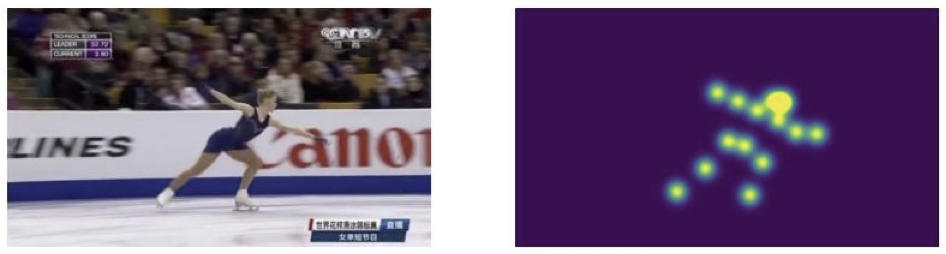
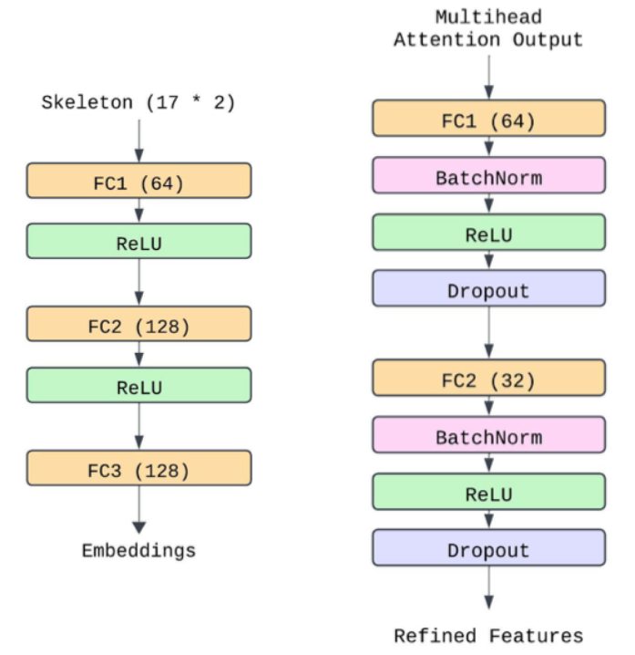
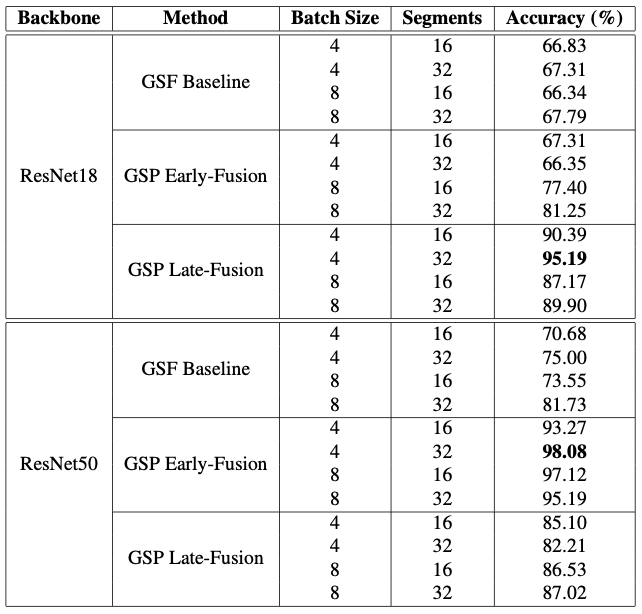

Abstract
This paper introduces Gate-Shift-Pose, an enhanced version of Gate-Shift-Fuse networks, designed for athlete fall classification in figure skating by integrating skeleton pose data alongside RGB frames. We evaluate two fusion strategies: early-fusion, which combines RGB frames with Gaussian heatmaps of pose keypoints at the input stage, and late-fusion, which employs a multi-stream architecture with attention mechanisms to combine RGB and pose features. Experiments on the FR-FS dataset demonstrate that Gate-Shift-Pose significantly outperforms the RGB-only baseline, improving accuracy by up to 40% with ResNet18 and 20% with ResNet50. Early-fusion achieves the highest accuracy (98.08%) with ResNet50, leveraging the model's capacity for effective multimodal integration, while late-fusion is better suited for lighter backbones like ResNet18. These results highlight the potential of multimodal architectures for sports action recognition and the critical role of skeleton pose information in capturing complex motion patterns.
Early Fusion: Gaussian Heatmap for Skeleton-Based Feature Extraction

In the early-fusion approach, pose information is incorporated by augmenting each RGB frame with an additional channel containing a Gaussian heatmap of pose keypoints. This results in a four-channel input (RGB + pose) per frame, which is processed by a GSF network. This strategy allows the network to learn correlations between pose and appearance features at an early stage, potentially capturing valuable low-level interactions between modalities.
Early-fusion is computationally efficient, as both RGB and pose information are processed jointly by the same feature extractor, eliminating the need for separate processing pipelines. However, by fusing the modalities from the initial layers, this approach may be limited in its ability to capture higher-level semantic interactions between pose and RGB features that emerge in deeper network layers.
Late Fusion: Pose Model and Alignment Layers

The late-fusion strategy employs a two-stream architecture with separate branches for RGB frames and poses. The RGB stream processes raw visual data with a GSF network, while the pose stream uses a dedicated MLP-based model that maps 34-dimensional joint coordinates (17 joints with x,y coordinates) through three fully connected layers (34→64→128→128 dimensions) with ReLU activations, producing a compact representation of skeletal dynamics.
Following independent feature extraction, the RGB and pose features undergo L2 normalization to ensure balanced scaling between modalities. The normalized features are concatenated and processed by a multi-head attention layer, which dynamically emphasizes contextually relevant features across both streams. This attention mechanism enhances the model's sensitivity to critical aspects of each modality within the fused representation.
The attention-enhanced output is refined through a feature refinement module consisting of two sequential linear layers that progressively reduce dimensionality (halving at each stage), with batch normalization, ReLU activation, and dropout applied between layers. This structure provides regularization, compressing the fused features and mitigating noise to produce a more robust and discriminative feature set for final classification.
The late-fusion approach enables effective leverage of complementary RGB and pose information, enhancing the model's ability to distinguish complex movements. Although this architecture introduces additional computational overhead compared to early-fusion, it facilitates contextually aware interactions between modalities, which is particularly advantageous for recognizing complex and dynamic actions in sports like figure skating.
Experimental Results

Gate-Shift-Pose achieves its highest accuracy (98.08%) with early-fusion on ResNet50 using a batch size of 4 and 32 segments, demonstrating that integrating RGB and pose data at the input stage is highly effective for models with greater capacity. For the lighter ResNet18 backbone, the best result (95.19%) was achieved with late-fusion using the same batch size and segment count, showing that maintaining separate RGB and pose streams until later stages is advantageous for smaller architectures.
The integration of pose data consistently outperformed the original RGB-only GSF baseline across all configurations. Specifically, the inclusion of skeleton-based features improved accuracy from 67.79% to 95.19% with ResNet18 (approximately 40% increase) and from 81.73% to 98.08% with ResNet50 (approximately 20% increase). These results confirm the effectiveness of pose information in capturing complex motion patterns essential for figure skating action recognition.
Experimental parameters also played a significant role: a batch size of 4 resulted in improved performance due to its stabilizing effect on training with relatively small datasets, while a higher segment count (32) consistently led to better results across both backbones by providing richer temporal context for modeling dynamic motion patterns. In summary, early-fusion is well-suited for larger backbones enabling effective multimodal integration, whereas late-fusion better supports smaller backbones by reducing computational complexity while maintaining strong performance.
BibTeX
@InProceedings{Bianchi_2025_WACV,
author = {Bianchi, Edoardo and Lanz, Oswald},
title = {Gate-Shift-Pose: Enhancing Action Recognition in Sports with Skeleton Information},
booktitle = {Proceedings of the Winter Conference on Applications of Computer Vision (WACV) Workshops},
month = {February},
year = {2025},
pages = {1257-1264}
}